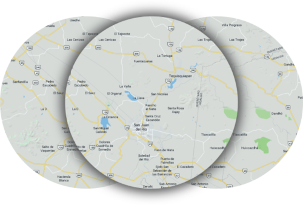
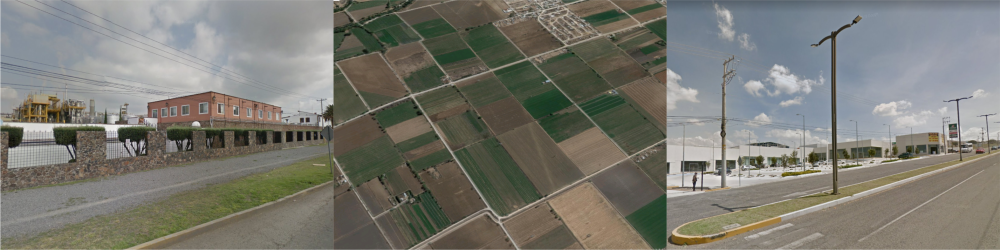
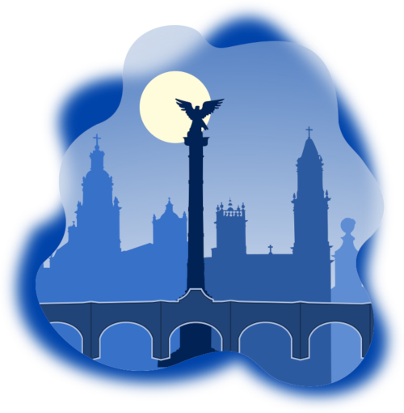
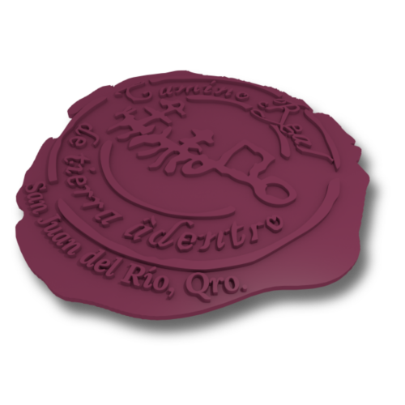
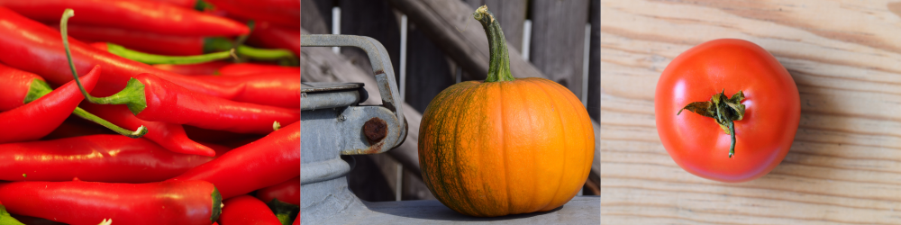
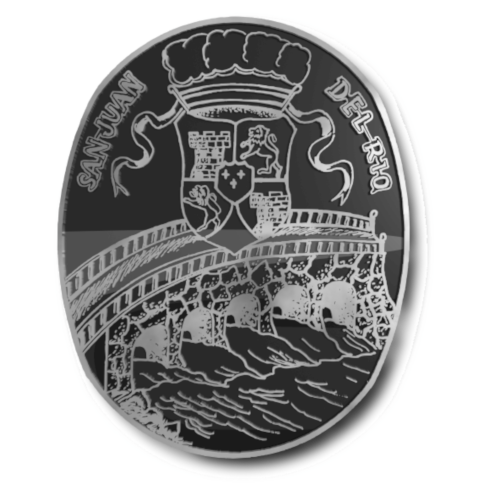
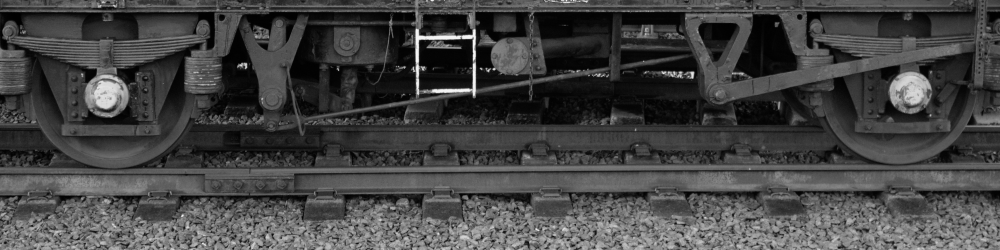
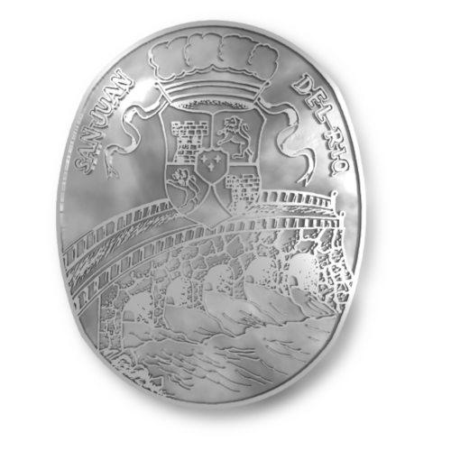
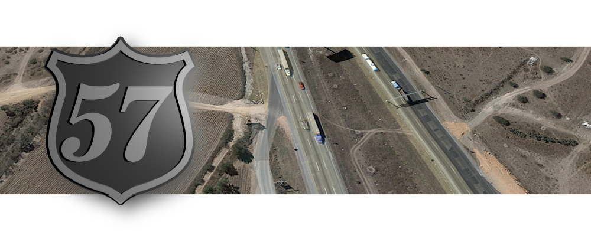
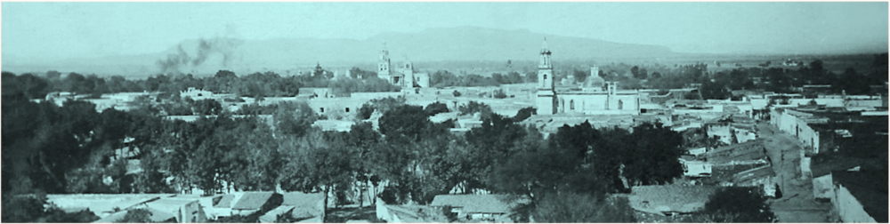

El municipio de San Juan es estratégico por muchas razones, una de las principales consiste en sus buenas vías de comunicación. La carretera federal 57 ó 45 es la principal, literalmente baja desde los Llanos de Cazadero, la pendiente de Palmillas, la ciudad de San Juan y sale del municipio en un paraje plano, cercano a La Estancia, con rumbo a Pedro Escobedo. Esta carretera ocupa unos 25 km. en nuestro municipio. La ruta más corta entre la Ciudad de México y San Juan, la cubre esta carretera 57, y es un trazo muy antiguo que data desde la Nueva España con el Camino Real de Tierra Adentro.
También está la importante carretera 120, que sale de la ciudad de San Juan del Río rumbo al norte, y habiendo recorrido unos 25 km., se llega a la ciudad de Tequisquiapan, o "Tx" como se le conoce comúnmente en esta región. Otra carretera importante es la estatal 300, que parte desde la capital municipal rumbo al sur, hacia Amealco, en la Sierra Otomí de Querétaro.
Estas vías de transporte y de comunicaciones facilitan el comercio por y en San Juan, en donde encontramos desde grandes almacenes tipo Aurrerá o Walmart, hasta conjuntos comerciales que incluyen Liverpool.
La agricultura en San Juan es muy próspera, y lo que más se siembra es el maíz para consumo humano, aunque hay que mencionar al frijol, calabaza, maguey y flores de ornato. También hay hortalizas, frutas y verduras muy variadas como jitomate, lechuga, haba, epazote, lenteja, jícama y demás productos del agro con poca agua, clima templado y con buenas vías de transporte disponibles.
Con respecto a la industria, en San Juan es abundante y dinámica. A lo largo de grande tramos de la carretera 57 hay talleres de muy diversa índole, y variedad de restaurantes. Hay dos parques industriales, el Valle de Oro y el Nuevo Parque Industrial.
Los caminos, en la historia de la humanidad, son condiciones que propician la comunicación y el comercio de un pueblo y han definido el porvenir de civilizaciones enteras. Las exploraciones de Europa en el “nuevo continente”, hallaron rutas precolombinas de comercio y tributos, que necesariamente conducían a algún lugar; sería una de esas rutas del imperio azteca, la que condujo a un grupo de frailes y militares europeos, acompañados de algunos indígenas conversos al valle de Iztacchichimecapan, iniciando con ello un proceso de adaptación y cambios.
El primero de los cambios sería el dar un nombre castizo a la región: San Juan del Río. Luego, la distribución de la zona en medidas y colindancias para establecer límites, tanto de habitación como de tierras de labranza para repartir entre los antiguos y nuevos propietarios que juntos, levantaban los primeros muros del San Juan del Río virreinal.
A partir de 1531, San Juan del Río, será ya un punto de referencia en los caminos del virreinato, por ser un paso obligado hacia las tierras del norte, un hecho que se fortalece con la llegada de un pionero del transporte novohispano: Fray Sebastián de Aparicio, quien dirigía un servicio de carretas y plataformas para transporte, y a su paso por San Juan, trazó el primer camino de la Ciudad de México hasta las prometidas minas de Zacatecas.
Desde ese momento, San Juan del Río comenzará una relación indisoluble con la historia del Camino Real y su trayecto desde la capital del virreinato, hasta alcanzar lo que serían tiempo después las tierras de Texas y Nuevo México.
El Camino Real agilizó el transporte de mercancías y en San Juan del Río, durante la segunda mitad del siglo XVI, se incrementó la llegada de nuevos productos de la Iberia, como fueron los cítricos, el laurel, la higuera, las parras, los duraznos, el aceite de oliva y el vino, que servían para venta y abasto local junto a los productos indígenas: pulque, calabaza, chilacayote, chile y jitomate. En las tierras de cultivo, ahora el milenario maíz alternaba con el europeo trigo, el centeno y la avena. A los corrales, llegaron animales de ultramar como cerdos, vacas, ovejas y cabras, que se criaban en estancias de ganado mayor y menor. Tanto el campo como el ganado, favorecieron en esos años el desarrollo de haciendas como La Llave, la Estancia de Galindo -que ya contaba con un molino- y la Guitarrilla, así como la actividad textil con productos de lana.
El viajero de la “ruta de la plata”, encontraba en San Juan del Río un caserío bien trazado en sus calles, además de una zona para habitación otomí; alimento en los mesones que se establecieron a lo largo de la Calle Real. Además de servicios de herrería; curtidos de cuero; sogas o mecates de manufactura indígena; alojamiento en la Venta del río y servicios religiosos en los templos principales, ubicados en la entonces plaza del Sol Divino -hoy Plaza Independencia-. El ganado que los arrieros llevaban ruta de las minas, debía ser inspeccionado en la oficina de registro -ubicada en los terrenos del actual edificio del Centro Histórico y Cultural, en el Jardín de la Familia- situación que contribuyó a cercar el pueblo, para evitar robos por parte de los chichimecas.
Al iniciar el siglo XVII, el comercio de mercancías y servicios al viajero no se limitaba al núcleo urbano de San Juan del Río, invariablemente tanto el Camino Real como las rutas que se desprendían de él, pasaban por las haciendas, situación que fue aprovechada por los propietarios, para establecer ventas -a finales del siglo anterior ya había seis permisos para su construcción en diferentes puntos- que ofrecían alojo, abrevadero y corrales para los animales de carga y tiro, que con más frecuencia se veían transitar por las carreteras de Santa María de la Asunción de Tequisquiapan, por la de Santa María de Amealco y el Paso del Arroyo Seco, actual Pedro Escobedo.
A medida que el paso hacia el norte de la Nueva España se incrementó, también aumentaron los requerimientos del viajero, para realizar escrituras, gestionar contratos y consignar transacciones de mercancías en San Juan del Río, asuntos de los que se encargaba el Escribano Público mientras que los impuestos por mercancía se pagaban en la Casa de las Diligencias.
Y así, se formaron construcciones en el poblado, entre andamios, enjarrados y cincelados de piedra, la actividad de la construcción daba trabajo tanto a lugareños como a peones llegados de otras tierras. Así, llegaba a su fin otro siglo y se recibía en San Juan del Río, el año de 1700.
En los primeros años del siglo XVIII las castas en San Juan del Río eran evidentes, pues habitaban españoles, criollos, mestizos, indígenas y mulatos. La población se dividía en ocho barrios y dos pueblos: el de Ahuacatlán y el de San Sebastián; las repúblicas de indios, que mantenían su idioma precolombino, también tenían su propio gobernante; un Camino Real que ya recibía al visitante con tres conventos, un templo parroquial de San Juan Bautista, un cementerio y un templo más, construyéndose a un costado del primero.
Una capilla para instruir en la Fe a los naturales, ubicada en lo alto de las peñas, conocida como el Calvario, y una venta; en los alrededores, con algunos tramos insertados dentro de los límites del pueblo, se encontraban las tierras de producción: las haciendas.
En 1710, bajo la guía del arquitecto Pedro de Arrieta, se comenzó la construcción de un puente cercano a la venta del río; poco más de un año después Arrieta concluyó esta obra que se ha conocido como Puente Grande, Puente de La Venta o Puente de la Historia; cualquiera que sea el mote, lo cierto es que esta edificación es el aporte más sobresaliente que San Juan del Río hizo a los caminos y puentes de la Nueva España, del México libre y de buena parte del siglo XX.
Al nuevo panorama que daba el puente, con el paso de las décadas se incluyeron la Casa del Diezmo y el templo parroquial de los españoles -hoy Santuario de Ntra. Sra. de Guadalupe-, así como el nuevo templo de naturales, por muchos años, del Sagrado Corazón -hoy parroquia de San Juan Bautista- y el templo del convento dominico, que en conjunto, recrearon el paisaje urbano en el que convivían los habitantes de San Juan del Río, mismo que, sin contar a la población flotante, ya para 1793 contabilizaba 16,279 almas.
Además de otorgarnos una nueva identidad nacional, el siglo XIX fue propicio para robustecer las vías de comunicación; San Juan del Río, establecido en un camino tradicional de paso hacia el centro y norte del país, recibió en 1881 al Ferrocarril Central, con un proyecto de vías férreas que inició un año antes con la construcción de la estación de Buena Vista en la Ciudad de México.
Las obras de ferrocarril marcharon a una velocidad nunca antes vista. El quince de septiembre de 1881 se comenzó a explotar el tramo de 100 kilómetros que va de la ciudad capital del país a San Antonio Tula (Hidalgo), mientras que los obreros ferroviarios se habían establecido desde el mes de mayo en San Juan del Río para construir un puente de fierro por los terrenos de El Carrizo, mismo que serviría como base del ferrocarril con una longitud de 33 metros. La pacífica vida de los habitantes, cambió entre explosiones de dinamita y cargamentos de rieles y durmientes, para terminar el tramo de 97 kilómetros que comprendía de San Antonio Tula a San Juan del Río, el 1 de diciembre del mismo año. Pero la demanda de habitación, servicios y alimento no acabó.
Permanecieron aquí mientras avanzaba el tramo San Juan del Río-Querétaro con 52 kilómetros, concluyéndose el 2 de febrero de 1882, luego siguieron los tramos de Querétaro a Irapuato, más adelante, a León, luego de Silao a Guanajuato, componiendo en su conjunto una porción de la sección sur del ferrocarril. La sección norte inició del Paso del Norte -actual Ciudad Juárez- hasta Chihuahua, Jiménez y Villa Lerdo. La segunda parte de la sección sur inició en 1883, conectando a León con Lagos y a este con la Encarnación hasta Aguascalientes, Zacatecas y Fresnillo, donde el 8 de marzo de 1884 se concluyeron las obras.
Una vez más, como había sucedido con el Camino Real, San Juan del Río se ligaba a la historia de un eficiente sistema de vías, que ahora ofrecían un medio de transporte capaz de llevar mercancías y pasajeros desde la ciudad de México hasta Chicago conectando al ferrocarril mexicano, con las vías norteamericanas de Atchison, Topeka, Santa Fe en Kansas-Colorado, Hannibal y San José en Missouri, hasta las de Burlington y Quincy en Illinois45. En San Juan del Río se hizo lo propio: se construyó una estación de tren en los terrenos que alguna vez fueron de La Guitarrilla, una Casa Redonda (taller) para las máquinas, luego, un comedor, y, ante la creciente demanda de carros para transporte, también se estableció el servicio de tranvías y plataformas tirados por mulas.
La primera línea del “tren de mulitas” hacía parada en el templo del Sacromonte, que en este siglo, se había agregado a la arquitectura de la ciudad, así como un teatro, la casa de don Esteban y la Columna de la Independencia, erigida en la vieja plaza del Sol Divino.
De la mano del porfiriato llegó el conflictivo siglo XX. Al término de la primera guerra mundial, los países de América retoman un ideal que había nacido años atrás: unir al continente a través de un sistema de carreteras. Como fue el caso de muchas naciones de Latinoamérica, en México, las obras de construcción de los caminos fueron paulatinas y tardaron décadas en articular la soñada carretera internacional. En el simbólico 5 de febrero de 1950, el entonces Primer Mandatario de la Nación, Miguel Alemán Valdés, inaugura la Carretera Panamericana Cristóbal Colón, que va desde Ciudad Juárez, Chihuahua, hasta El Ocotal en Chiapas, finalmente conectaba a México con la ruta que va desde Alaska, hasta Tierra de Fuego en Argentina.
Don Teófilo Gómez Centeno presidía entonces el Ayuntamiento de un San Juan del Río que se sumaba al camino continental desde Palmillas, siguiendo por la carretera de “las peñas” junto al Barrio del Calvario y bajando por “la curva” para cruzar la avenida principal y continuar después del puente de La Venta hasta La Estancia; éste, sería el tramo sanjuanense que días después cruzaran los primeros pilotos de la Carrera Panamericana, compitiendo al volante con autos de todas las marcas, desde la norteamericana Oldsmobile, hasta las europeas que fabricaban modelos nunca antes vistos por aquí, tales como Masserati, Mercedes Benz, Ferrari, Osca, Lancia y Alfa Romeo, y aunque los carros se fueron tan rápido como llegaron, las cuatro ediciones de esta carrera aseguraron al municipio, la visita anual tanto de aficionados como de medios nacionales y extranjeros que dieron cobertura al evento hasta el año 1954.
Aunque la Calle Real estrenaba nombre, su función era la misma: ser la ruta de personas que día y noche cruzaban por ella; el viajero llegaba en automóviles propios o en camiones de pasajeros; tras ellos, desde la curva de la Panamericana, bordeada desde entonces por talleres para automotores, seguían entrando transportes de carga y pasajeros a la ciudad que ya ofrecía en la década de los 50’s un Banco Mercantil del Bajío; hospedaje en el Rioja; en el Avenida; El Parador o en el Layseca. Las opciones de alimento dependían del presupuesto y del restaurante donde hicieran parada los autobuses, de esta forma los Tres Estrellas paraban en la Bilbaína; Estrella Blanca, frente al Sacromonte; Chihuahuenses en El Prado; los Ómnibus, en el comedor del mismo nombre ubicado en la casa de las Diligencias; cruzando el puente, la cocina del Mesón de la Venta. Los autobuses se concentraban también frente al Portal del Diezmo, donde se hallaba La Blanca. La central tenía su propio conjunto de locales de comida, conocido por todos como El Tragadero; sin faltar, la opción de visitar los puestos en el mercado de la Plaza Independencia.
Boticas como La Regina, de Jesús, la Cruz Blanca o la de Don Cándido, misceláneas como El Juguete, La Colmena, La Palanca, El Progreso y La Sevillana, vinos y licores en La Cabaña y ultramarinos en La Madrileña. Además, tiendas de ropa y sombrererías, una sala de cine, estación de tren, servicio postal y telegráfico, un hospital civil, escuelas primarias, médicos particulares, servicios legales y de construcción, productos lácteos, artesanías en mimbre y ópalos regionales.
La industrial local estaba a cargo de la Harinera Teide, Textiles Salas y La Cerillera. El campo se dedicaba a la siembra, a la cría de ganado y la producción de vino, toda esta labor se hacía en los ranchos, ejidos y las disminuidas haciendas que sobrevivieron a la repartición agraria que había sido motivo de conflictos años atrás; ahora, el clima rural volvía a la calma, lejos del creciente tráfico en la calle principal de San Juan del Río, la Avenida Juárez, mismo que la hacía intransitable en la temporada de Semana Mayor. El camino que había servido como ruta obligada a los viajeros durante siglos, ahora resultaba insuficiente y sería un hecho inevitable la construcción de una vía alterna en los años por venir.
Entre excavadoras y una multitud de trabajadores de caminos laborando al pie del Cerro de La Cruz, inició 1958; otro año que marcó el desarrollo en el comercio de estas tierras. En octubre, siendo Presidente de México Adolfo Ruíz Cortines y Presidente Municipal el Señor Juan José García Rebollo, se inauguró la Carretera Federal 57; cuyo trayecto sería de la Ciudad de México a Piedras Negras, Coahuila, cruzando 9 estados del país
A diferencia del Camino Real y la Panamericana, esta ruta no entraría por Avenida Juárez, sino que sacó a la periferia de la población el paso de los transportes por una autopista que hasta estos días, corre a un costado de la nueva central camionera.
Meses después, sobre la nueva ruta México-Querétaro, el 19 de marzo de 1959 abría sus puertas el restaurante Loma Linda con servicio de 24 horas; al año siguiente, a unos metros del ahí, la gasera Quere-Gas iniciaba sus operaciones; así, se fincaban las primeras construcciones de la colonia que nació con un comedor de veinte mesas.
A partir de los sesentas, el paso de vehículos por la Avenida Juárez o Panamericana disminuyó de manera paulatina. Primero, se fueron los transportes de carga; más de una década después, pese al reproche de algunos comerciantes del centro, el turno fue de los camiones de pasajeros que ahora llegaban a la terminal del novedoso Boulevard Hidalgo, trazado en los terrenos de La Viña y la Huerta Grande para conectar a la ciudad con la autopista 57, facilitando así, el acceso de los autos que llegaban desde el norte y la capital del país
En los setentas, visitar la ciudad ya dependía de una cuestión de gusto, a mediados de la década, dos cascos de haciendas se adaptaron como hoteles: Galindo y San Gil, haciendo que la mirada del turista volviera los ojos a San Juan del Río como opción para el esparcimiento. El hotel La Paloma ya daba hospedaje en el centro de la población que estrenaba un mercado, el Reforma. Un nuevo restaurante se abría cerca del puente, el Ehlers, y el club de golf se diseñaba en el camino a Querétaro. Al visitante también le atraían las aguas termales. En la ruta San Juan del Río a Tequisquiapan, se asentaron las primeras empresas industriales que llegaban de la capital del país, debido a una política de descentralización que inició en Querétaro un nuevo capítulo en su historia: el de la industria.
Entre otras, los nombres de empresas locales como Lux; Langrave; Grupo Intra y Establo Nacional, surgieron en esa década. Luego, las internacionales como Kimberly-Clark Planta Bajío, que ocupó los terrenos de la venta de San Cayetano, de la cual, sólo quedaba el recuerdo. A partir de ese momento, los años ochentas se encargaron de sumar docenas de industrias a la zona, además de nuevas rutas férreas, con la llegada de la doble vía electrificada que, en el ’84, comenzó a funcionar sobre un puente de 274 metros de largo sostenido por pilas de hasta 72 metros de alto, construcción comprendida en el tramo México-Querétaro y ubicada varios kilómetros detrás de los terrenos que ocuparía la nueva central de autobuses cuya construcción en ese momento, ya estaba en trámites.
Cuando la década llegaba a su fin, con el primer Parque Industrial de San Juan del Río ya se anticipaba la demanda de nuevos comercios, viviendas y servicios que irían en crecimiento durante las siguientes décadas y hasta nuestros días. Hoy, a casi 500 años después de que dos culturas coincidieran en el Iztacchichimecapan, se refuerza el destino que desde entonces definiría el rol de esta tierra en la historia: estar en la ruta de todo y ser un camino para todos; así, tanto a los que siguieron de largo, como para los que decidieron quedarse a formar parte de esta tierra, en cada instante comprendido dentro de casi medio milenio por cumplir. Ojalá supiéramos que llegaremos a ese festejo con la misma certeza de saber que, a San Juan del Río, siempre se llegará por el Camino Real de Tierra Adentro.
Desde el Cerro Gordo podemos observar hacia el poniente a la ciudad de San Juan del Río, grande e industriosa, la segunda más poblada del estado de Querétaro. Si buscamos a San Juan en un mapa, basta con localizar el extremo sur-oeste de Querétaro, o bien las coordenadas 20° 23’ norte - 100° 00’ oeste. La magnífica vista de San Juan incluye una gran llanura que se extiende hacia el poniente, sigue más allá de lo que alcanzamos a ver: se trata del Bajío Central
Esta región abajeña comienza aquí, sigue hacia la capital queretana y continúa por el estado de Guanajuato, hasta la ciudad de León. Esta tierra es propia para el cultivo, criar ganado y tener talleres e industrias: aquí la naturaleza es adecuada para la vida próspera. Pero también tenemos montañas menos propicias para la agricultura, pero sí para el pastoreo y para vivir ratos agradables paseando y disfrutando del panorama. Desde el alto Cerro Gordo, podemos ver rumbo al oeste a una serie de montañas que sirven de frontera con el municipio de Amealco, y girando al noreste desde el contiguo cerro de Banthí, vemos al imponente Xajay.
Desde la frontera de San Juan con Amealco, bajan de sur a norte una serie de arroyos (Agua Blanca, El Ánima, San Antonio y Tuna Blanca) que se juntan a unos 5 km al suroeste de la capital municipal, y forman el río San Juan, que le da su nombre a la ciudad. Hoy en día se han hecho una serie de canales para evitar que el río San Juan crezca en tiempos de lluvias, e inunde la ciudad.
Para el control y el aprovechamiento de estas aguas, se construyó la presa Constitución de 1917, mejor conocida como La Estancia, que tiene una capacidad de 70 millones de m3, lo que la convierte en una de las presas más grandes del estado de Querétaro. El agua que no se aprovecha y que no se evapora, sigue su curso hasta el río Moctezuma, frontera entre nuestro estado de Querétaro y el de Hidalgo.
